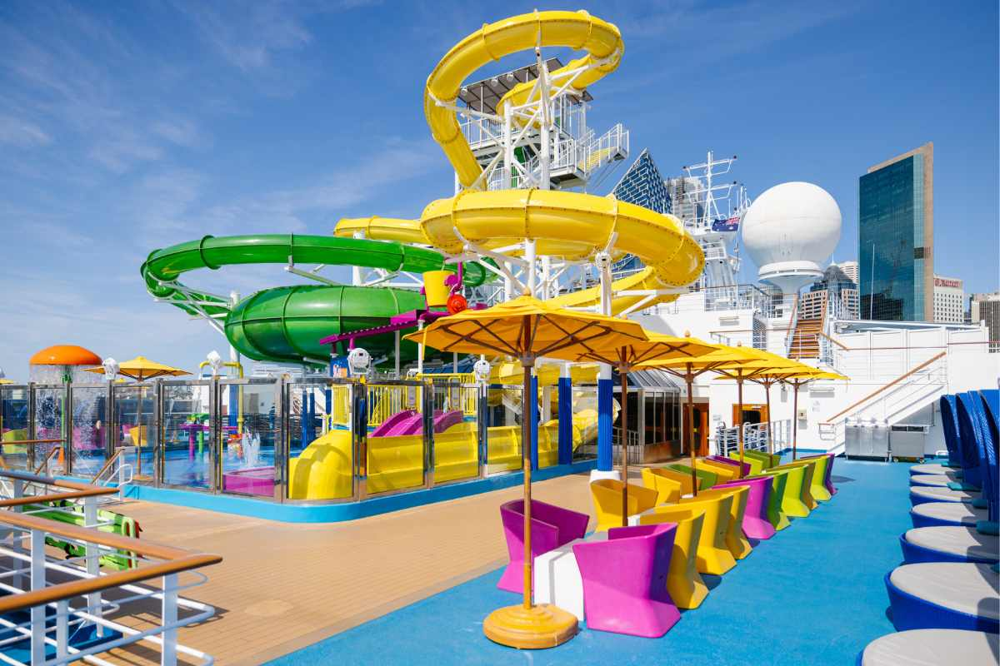

Is Carnival Splendor good for families in 2026? Yes - best value from Sydney. I worked on Carnival Splendor based in Sydney year-round. Here's honest crew review: ship size, where it sails 8-12 nights, best family cabins to book vs avoid, free food that kids love, WaterWorks, Camp Ocean kids club cost, and theme nights.
- ✅ What to pack for Carnival Splendor Sydney - 19 crew essentials (lanyard, power strip allowed, magnetic hooks)
- ✅ Tangalooma Moreton Island cruise port guide - free snorkel vs ATV
- ✅ Mystery Island Vanuatu what to do without excursion
Carnival Splendor Ship Size + Capacity 2026: How Big Is It?
The Carnival Splendor is a Conquest-class family cruise ship that carries 3,012 guests double occupancy, up to 3,780 total with 1,150 crew. Launched 2008, refurbished for Australia.
Crew tip: That size is sweet spot for Sydney families - big enough for WaterWorks water park + 4 pools + 6 hot tubs, small enough you don't walk 20 min to cabin like on bigger US ships. Deck plan 14 decks.
Best decks for families: Deck 6-7 midship for less seasick, Deck 8 aft balcony for wake views cheaper than midship. Cabins to avoid: Under Lido deck 9 - noisy at night, near Camp Ocean if you want quiet.
Carnival Splendor Sydney Itinerary 2026: Where Does It Sail From Sydney?
At time of making this post, Carnival Splendor is based in Sydney Circular Quay year-round 2026 - only Carnival ship doing that. Perfect for Aussies, NZ, Fiji families - no flights to US.
From Sydney Circular Quay:
- South Pacific 8-10 Nights Best Value: Vanuatu (Mystery Island, Noumea, Lifou), New Caledonia, Fiji, Moreton Island Tangalooma - Check Cheap Mystery Island excursions
- New Zealand 10-12 Nights: Bay of Islands, Auckland, Tauranga, Wellington, Christchurch - whale season June-Oct
- Australia 3-8 Nights Cheap: Brisbane, Airlie Beach Whitsundays, Cairns, Moreton Island Tangalooma Resort 4-day cruises
Most cruises are 7-12 nights - real port time without rushed. Also does 3-day cruises to nowhere from Sydney and 4-day Moreton Island Tangalooma Resort cruises from Sydney.
Most cruises are 8-12 nights, so you get real time in port without feeling rushed. But she also does 3 days cruises out to nowhere and 4 day cruises mostly to Moreton Island (Tangalooma resort Island).
Is Carnival Splendor Good for Families With Kids? Honest Review
1. Carnival Splendor Cost AUD 2026 - Is It Affordable for Families?
Carnival is famous for value in Australia. 8-night South Pacific from Sydney often under $1500 AUD per person including cabin, food, entertainment, kids clubs. Kids sail free/ $199 on select Sydney dates 2026. Way less than land resorts + flights to Fiji. Check for Sydney school holidays - prices double.
2. Carnival Splendor Free Food Included 2026 - What Restaurants Are Free?
All dining below included free - no extra cost :
- Guy's Burger Joint Free: Best burgers at sea - flame grilled, free, open late near Lido deck pool. Kids love it. Opens between 11am -6pm
- Pizzeria del Capitano Free 24/7: 12hr pizza - perfect for picky eaters midnight snack on Carnival Splendor
- BlueIguana Cantina Free: Tacos and burritos lunch by pool - free on Splendor
- Main Dining Room Free - Can You Order Multiple?: Yes - 2-story MDR, order 2 apps, 2 mains, 3 desserts included. 2-story with fun menus.
Paid food: Steakhouse $49.99 USD.
3. Carnival Splendor Water Park + Pools - WaterWorks Review for Kids

Where Splendor shines for kids:
- WaterWorks Water Park Free: 2 waterslides, splash zone, 300-gallon tipping bucket - kids spend all day. Free - no charge.
-
1 Pool + 2 Hot Tubs: Adult-only Serenity Deck 9 aft
so parents get peace - no kids allowed.
Tip: Hot Tubs are quickly filled, come early to secure a spot. - Camp Ocean Free Kids Club Cost 2026: Free for ages 2-11 - trained staff, games, crafts. Open 10am-10pm. Night Owls $7/hr after 10pm
- Circle C Teens Club Free: Ages 12-14 and Club O2 15-17 - video games, music, free
What to pack for WaterWorks: Towel clips (Lido windy) + water shoes - deck hot.
4. Carnival Splendor Entertainment - Is It Good at Night for Families?
Nights packed - all free included:
- Punchliner Comedy Club Family Shows: Family and adult shows 7pm and 10pm
- Hasbro Game Shows Free: Deal or No Deal, Guess That Groove live - win prizes
- Carnival Splendor Theme Nights 2026 What to Pack: 80's Rock n Glow party, White Hot Silent Party, SuperHero Academy, Island Night.
- Dr. Seuss + Seuss-a-palooza Parade Free: Kids meet Cat in Hat, Thing 1 & 2, full parade - #1 hit ages 3-10 - free
- Playlist Productions Broadway Shows Free: Included - no extra ticket
Carnival Splendor Deck Plan 2026 + Best Cabin to Book for Families
Best family cabins Carnival Splendor: Balcony Deck 6 midship - less motion leaving Sydney Heads, near Camp Ocean Deck 10. Interior hack: Deck 1-2 cheapest but feel engines. Aft balcony tip: Deck 8 aft - amazing wake views, sometimes cheaper than midship, quiet.
Packing for cabin: Walls metal - bring magnetic hooks 80lb + power strip no surge allowed - only 1 outlet in cabin.
Final Verdict: Should You Book Carnival Splendor from Sydney 2026?
Carnival Splendor nails family cruise formula from Sydney: affordable AUD price + free food Guy's Burger + WaterWorks water park free + free kids clubs Camp Ocean + great South Pacific destinations Tangalooma, Mystery Island without excursion fees. You can do as much or little as you want.
FAQ: Carnival Splendor Sydney 2026
Q: Is Carnival Splendor good for kids and toddlers?
A: Yes - best value from Sydney. WaterWorks water park free,
pools, Camp Ocean free kids club ages 2-11, Dr Seuss parade free.
Adult-only Serenity deck for parents.
Q: How much does Carnival Splendor cost from Sydney 2026
AUD?
A: 8-night South Pacific from ~$1200-$1500 AUD pp, 4-night
Moreton Island from $600 AUD pp. Kids sail free select dates. Check
Carnival Australia site for Sydney school holidays - prices higher.
Q: Where does Carnival Splendor sail from Sydney in 2026?
A: Year-round from Circular Quay Sydney: South Pacific
Vanuatu Mystery Island, Fiji, New Caledonia 8-12 nights; New Zealand
10-12 nights; Australia Brisbane, Airlie Beach, Moreton Island
Tangalooma 3-4 nights.
Q: What is free food on Carnival Splendor?
A:
Guy's Burger Joint, Pizzeria del Capitano 24/7, BlueIguana Cantina
tacos, Main Dining Room unlimited apps/mains/desserts, Lido buffet -
all free. Steakhouse paid.
Q: What deck is best on Carnival Splendor for families?
A: Deck 6-7 midship less seasick, near kids clubs Deck 10,
close to WaterWorks Deck 11. Avoid under Lido Deck 9 noisy. Aft
balcony Deck 8 best views value.